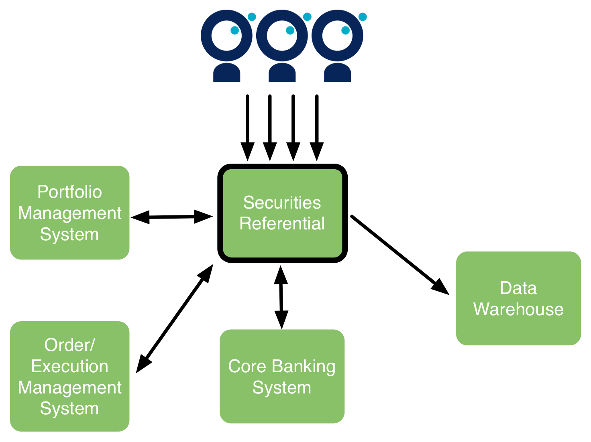

Le projet : migration d'une banque vers une nouvelle plateforme titres

Le projet : migration d'une banque vers une nouvelle plateforme titres

Quelques chiffres
Clients : x10
Portefeuilles titres : x5
Positions : x3
Titres : +50%
Ordres de Bourse : x2
et les effets indirects : opérations sur titres etc.
Il faut "cadrer" le chantier
Avoir une vue précise des volumes existants et cibles
Lister problèmes existants
Brainstormer sur les problèmes potentiels

Les problèmes peuvent sembler vertigineux
Volume d'ordres, nombre de clients, nombre d'utilisateurs concurrents, capacité à comptabiliser avant la clôture comptable, durée de la nuit batch, impact sur les temps de réponse, latence réseau etc.
Les problèmes peuvent sembler vertigineux
Ne pas se perdre dans les détails, ne pas aborder les solutions
Préférer l'exhaustivité à la précision
Timeboxer !
- Capacité du HUB actuel de doubler le nombre de transactions/jour
- Capacité à gérer des OST avec 15000 clients en position
- SLA de 5 secondes sur les actions en end-to-end
- Lenteurs actuelles sur les ordres sur fonds
- Ouverture de l'application à 1000 utilisateurs front-office
- Doublement du nombre d'utilisateurs front-office
- Impact de l'augmentation du nombre de titres sur la durée des batchs
- Latence et temps de réponse pour les utilisateurs distants
Comment y parvenir ?
Entretiens utilisateurs
Entretiens IT
Problèmes existants vs problèmes potentiels
Et ensuite ?
Construire un plan
La réponse à chaque problème pourra (devra) être complètement différente !
Construire un plan
La carte vous aide à visualiser et à prioriser, elle ne "résout" pas les problèmes
Chaque problème reste complexe et lié au reste du SI
Diviser pour mieux régner
- 2 patterns:
- Diviser/découpler : passer d'un test de N systèmes à un test de k<N systèmes (idéalement 1)
- Simplifier : réduire la dimensionnalité
Diviser/découpler : un exemple
Diviser/découpler : un exemple

D'autres découplages sont possibles : test unitaire isolé, test unitaire mais isolé etc.
Simplifier : des exemples
Ne pas mesurer tous les cas de figure (e.g. types d'opérations ou d'actifs)
Uniquement simuler les actions principales de l'utilisateur lors d'un test de charge
Faire le test de charge avec des données existantes
Utiliser un jeu de données restreint pour les tests
! Attention, certaines simplifications seront fausses. Il faut penser à documenter les hypothèses faîtes !
Et maintenant ?
Le problème est isolé et simplifié, comment je le résous ?
Analyse de l'existant
Modélisation et extrapolation
Test de l'existant
Test de la cible
Test end-to-end intégré de la cible
! Certains problèmes devront passer par plusieurs étapes, afin de limiter le risque !
Analyse de l'existant : un exemple
Temps de réponse end-to-end
Modélisation et extrapolation : un exemple
Capacité du système en terme de transactions
Où pouvez-vous vous "planter" ?
Rappel: vous ne pourrez pas garantir à 100% la performance
Vous pouvez vous planter car :
- un risque est passé à travers le brainstorming
- une simplification (couplage, dimensionnalité) était trop "simpliste"
D'expérience mes mauvaises décisions étaient dues à :
- une mauvaise connaissance de la performance existante
- une mauvaise connaissance des usages existants
Disclaimer
Les tests end-to-end sont complexes, ceci ne se veut pas une méthode systémique mais un inventaire d'outils à disposition, avec un REX sur leur efficacité